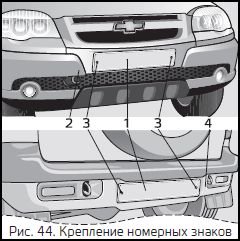

Chevrolet NIVA-ЭКСПЛУАТАЦИЯ АВТОМОБИЛЯ
 Установка номерных знаков
Номерные знаки 1, рис.44, крепятся непосредственно к переднему 2 и заднему 4 бамперам при помощи самонарезающих винтов 3 с шайбами.
Внимание
Не рекомендуется устанавливать номерные знаки в дополнительные рамки, так как это может привести к их потере в сложных дорожных условиях.
Допускается установка номерных знаков в рамки только при условии сохранения относительного расположения знака и фонарей освещения номерного знака согласно требованиям ГОСТ Р 50577.
ОСНОВЫ БЕЗОПАСНОЙ ЭКСПЛУАТАЦИИ АВТОМОБИЛЯ
Соблюдение нижеприведённых рекомендаций в значительной степени повысит Вашу безопасность на дорогах и позволит сохранить транспортное средство в исправном состоянии.
Меры предосторожности при эксплуатации автомобиля
Автомобиль лёгок в управлении, обладает хорошей проходимостью в условиях песчаных, заснеженных и размокших грунтовых дорог. Тем не менее, следует всегда помнить, что автомобиль не предназначен для постоянной эксплуатации в тяжёлых дорожных условиях.
Для смазки узлов и агрегатов, заправки топливного бака, применяйте материалы, рекомендуемые заводом изготовителем, Применение других материалов может привести к преждевременному износу или повреждению этих узлов и агрегатов.
Внимание
Не допускается эксплуатация автомобиля с горящей контрольной лампой недостаточного давления масла. Горящая лампа указывает на недостаточное давление в системе смазки двигателя, что может привести к его отказу.
В случае если при работающем двигателе горит постоянным светом илимигает контрольная лампа недостаточного давления масла необходимо доставить автомобиль к ближайшему официальному дилеру ЗАО «Джи Эм– АВТОВАЗ».
Внимание
Никогда не допускайте работы двигателя с частотой вращения коленчатого вала, при которой стрелка тахометра находится в сплошной красной зоне шкалы.
Стрелка тахометра в красной зоне со штриховкой сигнализирует о работе двигателя с высокими нагрузками и приближении частоты вращения коленчатого вала к не допустимым значениям.
Внимание
Эксплуатация шин с давлением, отличающимся от рекомендованного, приводит к их преждевременному износу, а также к ухудшению устойчивости и управляемости автомобиля.
Загорание контрольной лампы «Проверьте двигатель» при работающем двигателе не означает, что двигатель должен быть немедленно остановлен – контроллер имеет резервные режимы, позволяющие двигателю продолжать работать в условиях, близких к нормальным. Тем не менее, следует немедленно обратиться для устранения причины неисправности к ближайшему официальному дилеру ЗАО «Джи Эм-АВТОВАЗ».
На автомобиле установлен двигатель с нейтрализатором и датчиками концентрации кислорода, которые рассчитаны на применение только неэтилированного бензина.
Этилированный бензин в короткий срок выводит из строя данные элементы, появляется дымный выхлоп и резко возрастает расход топлива.
Нейтрализатор является дорогостоящим узлом, обеспечивающим соблюдение требований по охране окружающей среды. Нейтрализатор может выйти из строя и в случае пропусков искрообразования в системе зажигания, т.к. в данном случае топливо будет воспламеняться в нейтрализаторе, и температура в нём резко возрастёт, что приведёт к повреждению каталитического блока.
Поэтому при появлении пропусков зажигания – перебоев в работе двигателя и подёргивания при движении автомобиля – нужно прекратить движение, заглушить двигатель и принять меры по доставке автомобиля к ближайшему официальному дилеру ЗАО «Джи Эм-АВТОВАЗ».
Во избежание выхода из строя нейтрализатора не производите пуск двигателя путём буксирования автомобиля и ни в коем случае не используйте стартер для передвижения автомобиля.
Для предупреждения пропусков зажигания регулярно выполняйте у официального дилера ЗАО «Джи Эм– АВТОВАЗ» все предписанные «Сервисной книжкой» работы по уходу за системой зажигания.
Предупреждение
В связи с тем, что нейтрализатор, расположенный под днищем автомобиля, имеет высокую рабочую температуру, следите при парковке автомобиля, чтобы под нейтрализатором не оказалась сухая трава или другой горючий материал – ветошь, бумага, древесные стружки и т. д.
Посадка водителя за рулем
Безопасная техника вождения автомобиля во многом зависит от правильной посадки водителя. Правильная посадка – водитель достаточно плотно опирается на спинку сиденья, ноги при полном ходе педалей вытянуты не полностью, а обе руки, слегка согнутые в локтевых суставах, удерживают верхнюю часть рулевого колеса.
Положение тела должно быть устойчивым, но не напряжённым – это предотвращает быстрое утомление.
Подготовка автомобиля к движению
Перед выездом из гаража или с места стоянки проверьте техническое состояние автомобиля.
Для этого:
1. Проверьте и доведите до нормы, см. Таблицу 1, давление воздуха в шинах. Разница давления вшинах всего на 0,2–0,3 кг/см2 ухудшает управляемость автомобиля, а при торможении может привести к его заносу.
2. Проверьте уровень масла в картере двигателя и при необходимости доведите его до нормы.
3. Проверьте уровни охлаждающей, тормозной и омывающей жидкостей и при необходимости доведите их до нормы.
4. Проверьте уровень жидкости в бачке системы гидроусилителя рулевого управления и при необходимости доведите его до нормы.
5. Проверьте исправность ламп внешних световых приборов.
6. Проверьте работу стеклоочистителей и омывателей стёкол, стояночного тормоза.
7. Проверьте правильность установки зеркал, сидений и ремней безопасности.
8. Осмотрите место стоянки автомобиля. Наличие следов масел и эксплуатационных жидкостей под автомобилем свидетельствует о негерметичности его узлов и агрегатов.
В этом случае необходимо обратиться к официальному дилеру ЗАО «Джи Эм- АВТОВАЗ» для выявления и устранения причин их появления.
9. В начале движения проверьте исправность рабочих тормозов.
Эксплуатация нового автомобиля
Во время пробега новым автомобилем первых 3000 км:
1. При движении автомобиля не превышайте скорости 100 км/ч.
2. Запрещается буксирование прицепа или другого автомобиля.
3. Переходите своевременно на низшую передачу в коробке передач в соответствии с условиями движения, избегая перегрузки двигателя.
Стоянка автомобиля с открытой дверью задка
Во время стоянки автомобиля в тёмное время суток при открытой на максимальный угол двери задка используйте знак аварийной остановки.